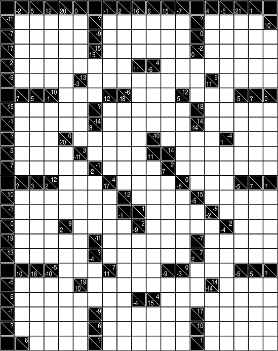

Directions for cross difference puzzle: Fill each empty square with a digit from 1 through 9 such that no number is repeated in any horizontal or vertical entry. The clue at the left or top of each entry is equal to the sum of the numbers in the odd-numbered positions minus the sum of the numbers in the even-numbered positions. For example, the entry 25483 would receive the clue −4: 2 - 5 + 4 - 8 + 3 = −4
When finished, convert the missing clues (marked “?”) to letters and find the unique one-word anagram.
